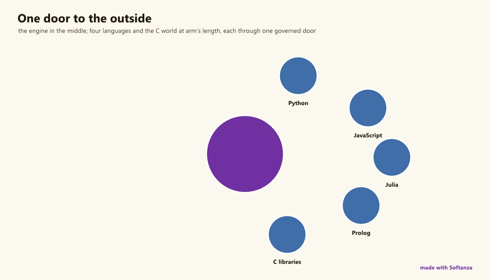

Extensibility & foreign code
Strong at consuming foreign libraries, pragmatic at bridging; the plugin, FFI and embed plane is mostly planned.
1 Strong · 2 Solid · 3 Partial · 6 Emerging
Measured against: FFI · Pyodide · Folders: base/plugin · base/extercode · base/extincode

The most honestly-mixed group in the survey. Softanza consumes a large, carefully-vendored foreign-code stack (tree-sitter, SQLite, curl, mbedTLS, zlib, ggml, RmlUi, HarfBuzz, PCRE2, all compiled from source) and bridges pragmatically to Python/R/Julia/C/Prolog/Node by subprocess, but the extensibility the group is named for is overwhelmingly planned: no in-process FFI, no embedded interpreter, and the plugin plane ('a plugin is governed foreign capability') is a detailed plan with a recovered reference archive but zero live code.
What a maker does with it, and what stands out
- Strong foreign-code integration: a dozen serious native libraries built from source with no runtime dependencies
- Governed foreign capability (designed): accept code you don't trust, audit what it did, undo it
- SQL-in-Haro and paste-and-tweak foreign-syntax shims
- The recovered 2024 plugin system proves per-call VM-state isolation works (~3.1 ms/call)
What is owed
- Fix the red interop suites (C22 duplicate shim definitions, 0 passing)
- Build the plugin plane (PL0-PL5)
- In-process FFI (dlopen / cffi-style)
- Configurable toolchain discovery (retire the hardcoded d: interpreter paths)
No example run on this page. The Python bridge requires a declared execution posture and was not exercised tonight; rather than an unrun block, the page points to the repository's narration on the bridge to Python.
The lanes, one by one
Lanes and their notes are quoted as they were read at the source, on Read from the source on 2026-09-16, from a read-only main worktree -- base/extercode and base/extincode loaded in stzBase; base/plugin = plan + recovered/ archive, not loaded; test/plugin absent.